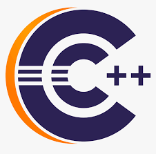
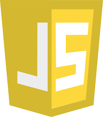

Programming Languages:
-
 Java Java is a popular programming language that is known for its versatility and portability.
Java Java is a popular programming language that is known for its versatility and portability. -
 Python Python is a high-level, interpreted programming language that emphasizes code readability and simplicity.
Python Python is a high-level, interpreted programming language that emphasizes code readability and simplicity. -

C/C++ C/C++: C and C++ are closely related programming languages. C is a general-purpose, procedural programming language, while C++ is an extension of C that adds support for object-oriented programming.
-

JavaScript JavaScript is a high-level, interpreted programming language primarily used for developing interactive web pages and web applications.
Technical Skills:
-
 Full Stack Development Full stack development refers to the practice of developing both the frontend (client-side) and backend (server-side) components of a web application.
Full Stack Development Full stack development refers to the practice of developing both the frontend (client-side) and backend (server-side) components of a web application. -
Internet of Things IoT refers to a network of physical devices embedded with sensors, software, and connectivity capabilities that enables them to collect and exchange data over the internet.
-
Data Science Data science is an interdisciplinary field that involves extracting insights and knowledge from data using various scientific methods, processes, algorithms, and tools.
-
 MERN stack + Electron MERN is an acronym that stands for MongoDB, Express.js, React, and Node.js. It represents a popular stack of technologies used for developing web applications.
MERN stack + Electron MERN is an acronym that stands for MongoDB, Express.js, React, and Node.js. It represents a popular stack of technologies used for developing web applications.
Projects:
-
Mobile Application for Hospital Management System A Hospital Management System (HMS) is a software solution that streamlines and automates various administrative and operational tasks within a hospital or healthcare facility. It helps manage patient information, appointments, medical records, billing, inventory, and other essential aspects of hospital operations.
-
Web Application for Seating Arrangement A seating arrangement refers to the organization and allocation of seats in a venue, such as a theater, auditorium, conference hall, or classroom. It involves assigning seats to individuals or groups to ensure proper seating arrangements and optimize space utilization.
-
Desktop Application for Machine Monitoring System A Machine Monitoring System is a software solution that tracks, monitors, and collects data from machines or equipment in real-time. It provides insights into machine performance, operational efficiency, and maintenance needs.
-
IoT Application for Temperature Monitoring Temperature monitoring involves the measurement and tracking of temperature levels in real-time. It is a crucial aspect of many industries and applications, including healthcare, food storage, manufacturing, and environmental monitoring.